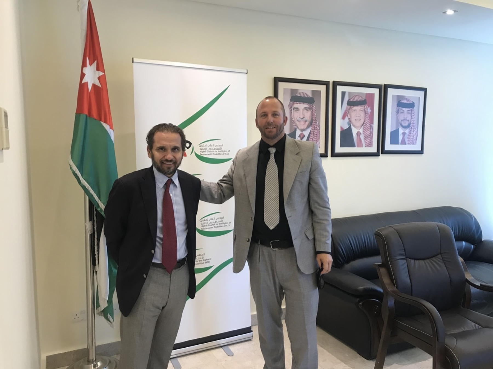
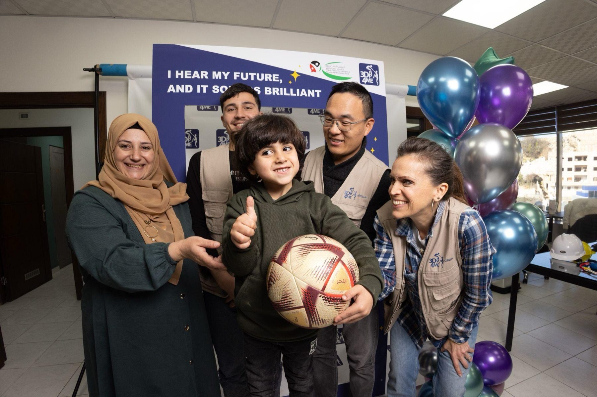
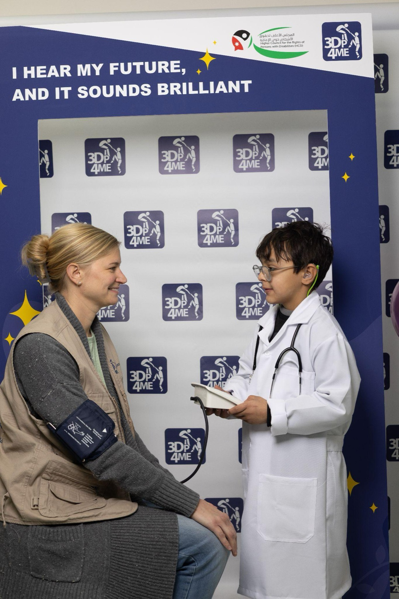
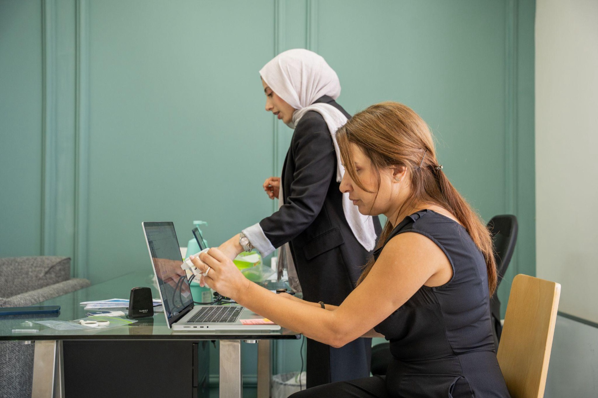
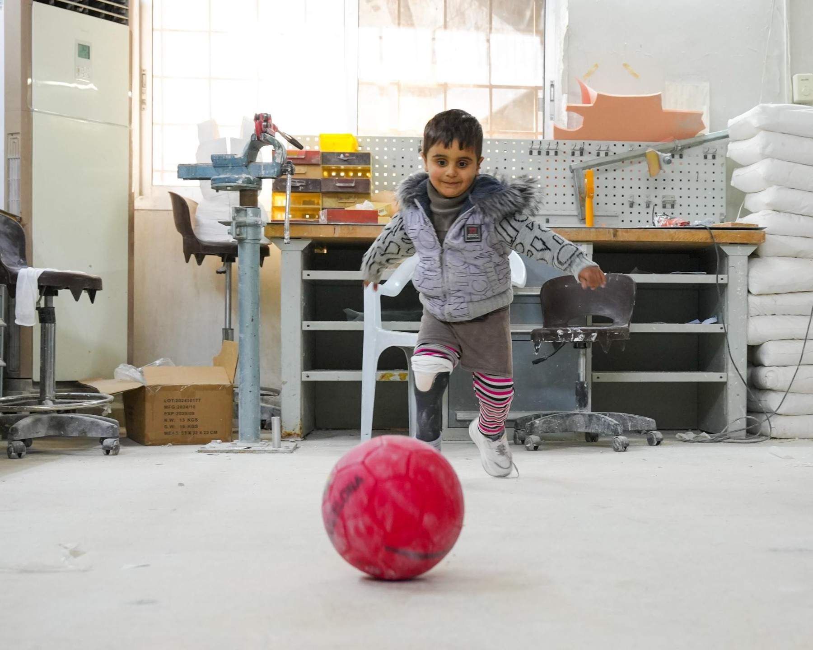
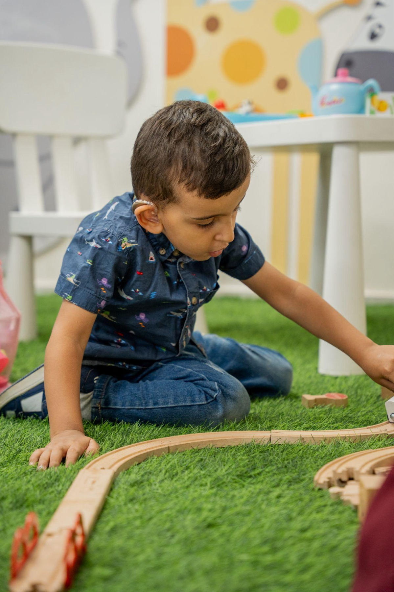
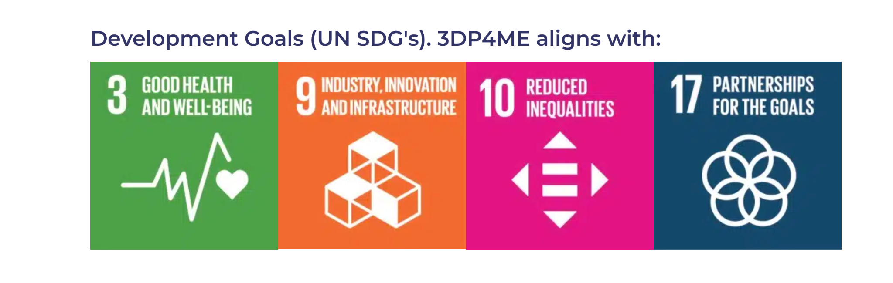
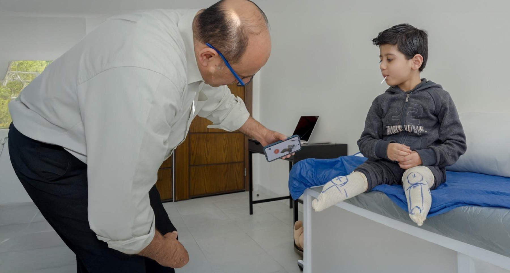

3DP4ME uses digital scanning, 3D design, and additive manufacturing to provide customized hearing solutions today — and prosthetic solutions as it expands.
Become a partner Learn more
Through holistic health care and 3D printing, our Hearing Express and Step by Step programs change a child's lifetime trajectory — and every technical or resource investment has a major multiplying effect.
Holistic care plus 3D printing changes a child's lifetime trajectory — your investment multiplies.
Help shape AI-assisted fitting, better scanning, and improved prosthetic design with global applications.
Disability inclusion, health equity, and innovation for underserved communities — in one partnership.
Engineers, designers, developers, AI and supply-chain specialists can all contribute meaningfully.
A child hearing for the first time. First independent steps. Stories that move employees, customers, and investors.
Our partners aren't just sponsors — they help shape the future of assistive health devices.

Sponsor a group of children, a full program year, or become a founding partner of our Impact Growth Fund.
See giving levels →
Technology, materials, logistics, and expertise — from AI-assisted fitting to better scanning and prosthetic design.
Partner with us →
Workflow optimization, 3D manufacturing, data analytics — plus a visit to our Amman workshop on a fitting day.
Get your team involved →As an Intel RISE Technology Initiative partner, 3DP4ME worked with Intel and Accenture in 2023 to pilot custom 3D printed hearing aids for children in Jordan.
"We are thrilled to be collaborating with Accenture to help the team at 3DP4ME realize their mission."Darryl Adams, Intel Director of Accessibility

Accenture champions and sponsors 3DP4ME, helping bring 3D printed hearing aids to children in an affordable, scalable way.
"I am excited & proud for Accenture to be a champion and sponsor of 3DP4ME."Paul Daugherty, Accenture

DHL Express donated the shipping of our new 3D printer from the USA to Jordan. With two printers running, our lab can now produce 20–25 prosthetics a month.


The Hanger Foundation, which supports the orthotic and prosthetic community through grants, scholarships, and global giving, joined 3DP4ME as a sponsor in 2025.



Partnership supports the social impact priorities that matter to you — disability inclusion, health equity, and innovation for underserved communities. Our work aligns with four UN Sustainable Development Goals.

A child hearing for the first time, or taking their first independent steps — stories that resonate with your employees, customers, and investors.
One goal. Many partners. Exponential impact. Thank you to every company and institution walking alongside us.



Tell us a little about your company, choose a giving level, and book a time to talk with our team.
Become a partner